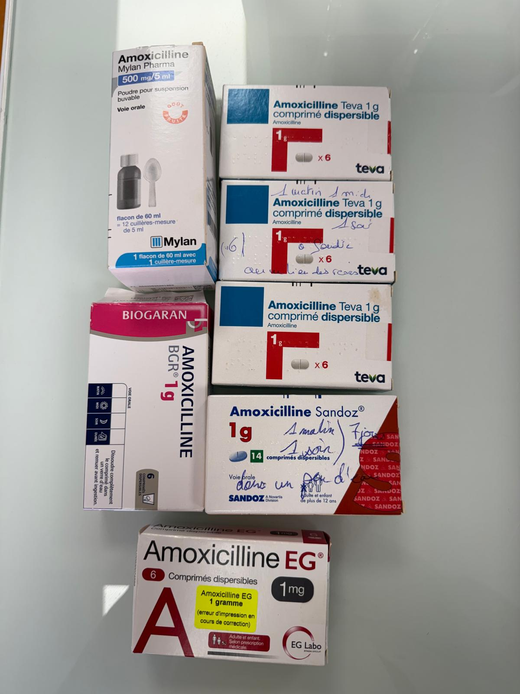
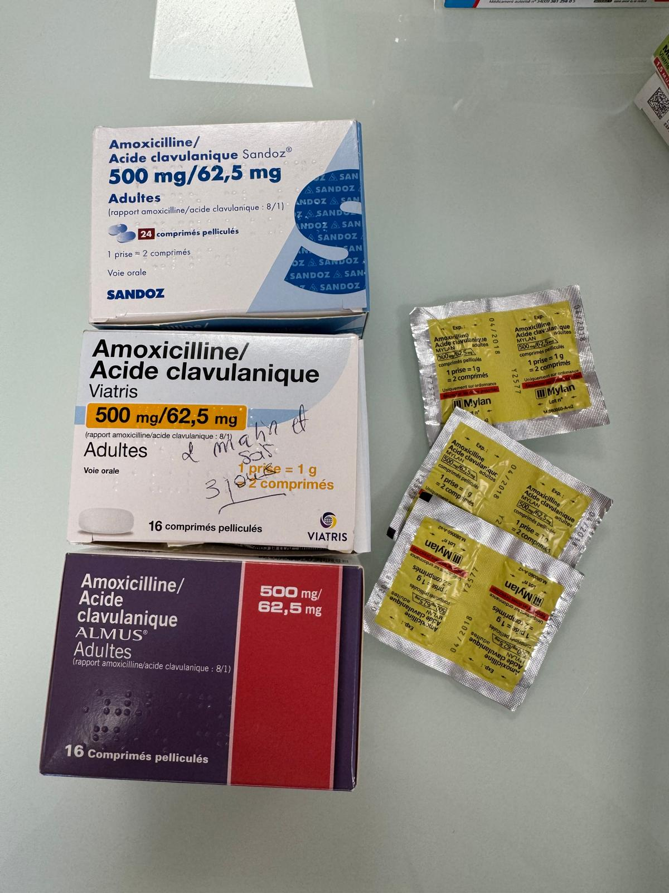

Bienvenue
Retrouvez ici le suivi de nos expérimentations, semaine par semaine.
Semaines 36 à 39
Ce qu'on a fait
Écris ici ce qui a été réalisé.
Résultats
Écris ici les résultats.
Semaines 40 à 45
Ce qu'on a fait
Écris ici ce qui a été réalisé.
Résultats
Écris ici les résultats.
Semaine 46
Mardi : Réunion d'équipe et découverte de la collecte d'antibiotiques

L’amoxicilline est un antibiotique appartenant à la famille des pénicillines. Elle agit en empêchant les bactéries de fabriquer leur paroi protectrice, ce qui entraîne leur destruction. Elle est utilisée pour traiter différentes infections bactériennes, notamment les infections ORL (angines bactériennes, otites, sinusites), respiratoires, dentaires et certaines infections urinaires. Elle est cependant inefficace contre les virus, comme ceux responsables du rhume ou de la grippe.

L’amoxicilline associée à l’acide clavulanique est un antibiotique composé de deux substances actives. L’amoxicilline détruit les bactéries, tandis que l’acide clavulanique bloque certaines enzymes bactériennes appelées bêta-lactamases, capables de rendre les bactéries résistantes à l’amoxicilline. Cette association permet donc d'élargir le spectre d'action de l'antibiotique et de traiter certaines infections causées par des bactéries résistantes à l'amoxicilline seule.
Protocole : détermination de la CMI en plaque 96 puits (révélation au TTC)
Médicaments et souche
Souche testée : S. aureus
Protocole de manipulation : microdilution en plaque + TTC
Préparation
- Référencer les flacons (nom, marque, concentration, dates de péremption, numéro de lot).
- Préparer le bouillon Mueller-Hinton et le répartir stérilement.
- Reconstituer la solution de TTC.
- Plaques 96 puits stériles.
Préparation de l'inoculumÀ chaque session de test
- Régenerer le bouillon de S. aureus dans un bouillon GNO et incuber (24 h à 37°C).
Dilution des antibiotiques
- Diluer 1g de chaque antibiotique à tester dans des fioles jaugées de 100mL.
- Réaliser une gamme de dilutions en cascade directement dans la plaque.
- Répéter la gamme pour chaque antibiotique, avec toujours le même volume final par puits (100 µL).
Plan de plaque et témoins
Proposition de plan :
| Colonnes | Contenu |
|---|---|
| 1 à 10 | Antibiotique en dilutions croissantes + inoculum |
| 11 | Témoin de croissance : bouillon + inoculum, sans antibiotique (doit virer au rouge) |
- Chaque test est réalisé en duplicat (2 lignes).
Inoculation et incubation
- Ajouter l'inoculum dans tous les puits.
- Couvrir la plaque et incuber 24 h à 37 °C.
Révélation au TTC et lecture
- Ajouter le TTC dans chaque puits.
- Réincuber 30 min à 37 °C, à l'abri de la lumière.
- Lecture manuelle : noter pour chaque puits la couleur, rouge (croissance) ou incolore (inhibition).
Interprétation
- CMI : la plus faible concentration pour laquelle le puits reste incolore (pas de développement de la souche).
- Fil conducteur principal : tracer une courbe CMI = f(temps écoulé depuis fabrication/péremption) sur les mois de suivi, pour les aliquotes conservées en conditions normales. Une augmentation de la CMI traduit une perte d'efficacité.
- Flacon « périmé depuis longtemps » (comparaison complémentaire) : comparer sa CMI à celle de l'aliquote J0.
- Catégories S / I / R : comparer les CMI aux seuils CASFM/EUCAST. Point fort pour le poster : une hausse de CMI, même d'une seule dilution, peut faire changer de catégorie.
Semaine 47
Lundi : Préparation de l’inoculum de Staph.aureus
ajouter la video
Mardi : Dilution des antibiotiques et préparation des plaques
Mercredi : Ajout du TTC, lecture manuelle et avec l’automate (lecteur de plaque) + Réflexion sur le changement de méthode à faire pour vendredi.
Vendredi : Répétition de la manipulation
Semaine 48
Ce qu'on a fait
Écris ici ce qui a été réalisé.
Résultats
Écris ici les résultats.
Semaines 49 à 1
Ce qu'on a fait
Écris ici ce qui a été réalisé.
Résultats
Écris ici les résultats.
Semaine 2
Ce qu'on a fait
Écris ici ce qui a été réalisé.
Résultats
Écris ici les résultats.
Semaine 3
Ce qu'on a fait
Écris ici ce qui a été réalisé.
Résultats
Écris ici les résultats.
Semaine 4
Ce qu'on a fait
Écris ici ce qui a été réalisé.
Résultats
Écris ici les résultats.
Semaines 5 à 10
Ce qu'on a fait
Écris ici ce qui a été réalisé.
Résultats
Écris ici les résultats.
Semaine 11
Ce qu'on a fait
Écris ici ce qui a été réalisé.
Résultats
Écris ici les résultats.
Semaine 12
Ce qu'on a fait
Écris ici ce qui a été réalisé.
Résultats
Écris ici les résultats.
Semaine 13
Ce qu'on a fait
Écris ici ce qui a été réalisé.
Résultats
Écris ici les résultats.
Semaines 14 à 19
Ce qu'on a fait
Écris ici ce qui a été réalisé.
Résultats
Écris ici les résultats.
Semaine 20
Ce qu'on a fait
Écris ici ce qui a été réalisé.
Résultats
Écris ici les résultats.
Semaine 21
Ce qu'on a fait
Écris ici ce qui a été réalisé.
Résultats
Écris ici les résultats.